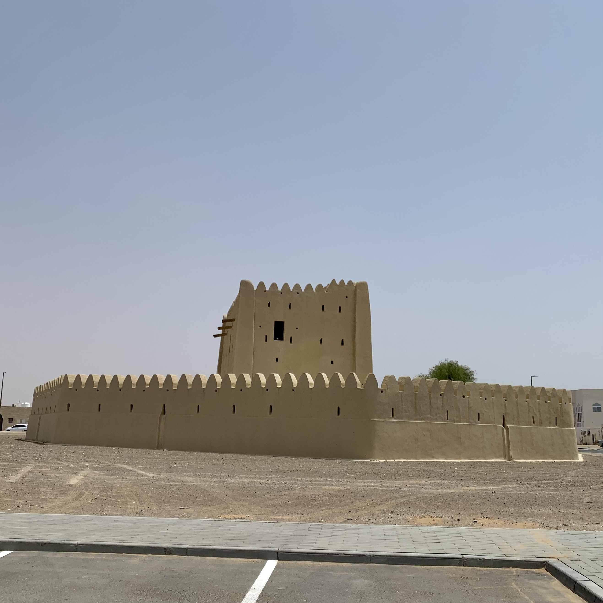
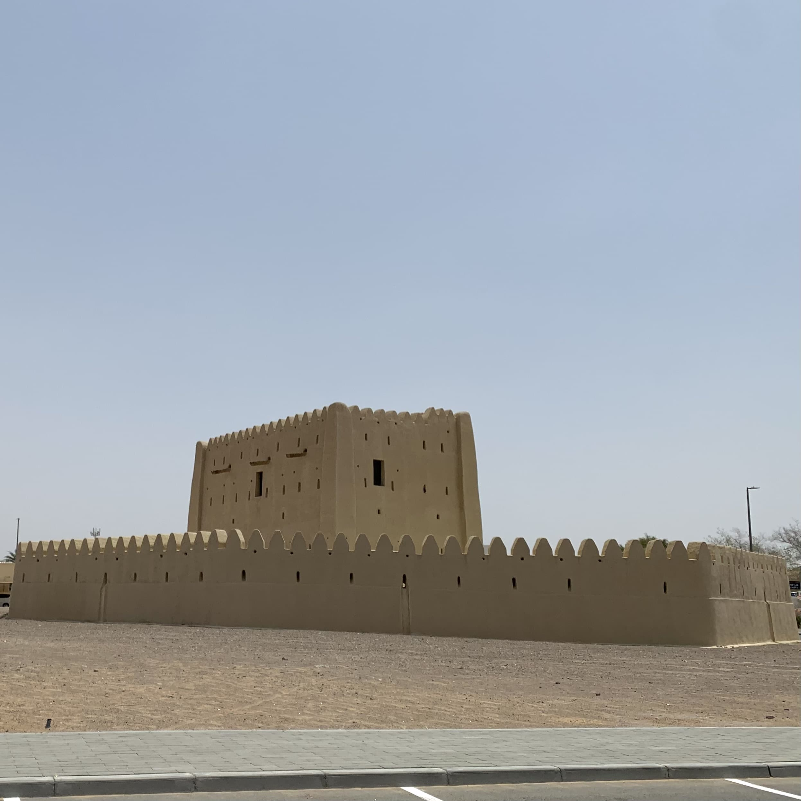

يقابلك هذا الحصن المنيع فور ما تدخل منطقة الرميلة، بسوره المسنَّنِ التساعي الأضلاع، تتوسطه مربعة ذات طابقين.
 كان الحصن مقفلًا وقت ما زُرته. وقد كانت عنده لافتة سابقًا لكنه الآن خالٍ منها.
الحصن سهلٌ الوصول إليه، يقع في واجهة منطقة الرميلة قرب هيلي.